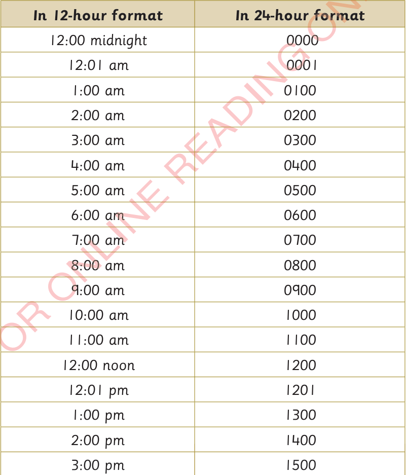

A day has 12 hours and a night has 12 hours. In the 24 hours format, a day starts after 12:00 midnight. The 24 hour format is written in four digits. The first two digits on the left indicate hours and the remaining digits indicate minutes.
The following table shows the relationship between time in 12-hour and 24-hour format.
